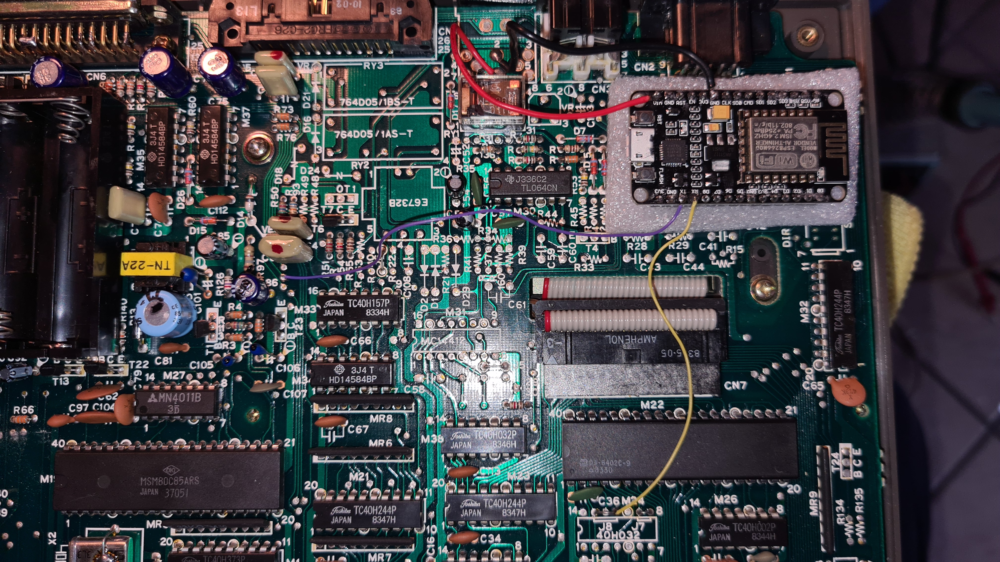

OLIVETTI M10 WI-FI MODEM
PROJECT DESCRIPTION
This document summarizes the steps necessary to connect an ESP8266 based Wi-Fi modem to an Olivetti M10 (version without modem).
Official Video
ALL IMAGE ARE STORED IN HIGH RESOLUTION. DOWNLOAD THEM FOR A BETTER VIEW.
This operations require basic soldering skills and anti-ESD precautions.
No responsibility is taken in case of damages or whatsoever.
1) Get and properly program an ESP8266 Wi-Fi modem as indicated here:
https://1200baud.wordpress.com/2017/03/04/build-your-own-9600-baud-c64-wifi-modem-for-20/
Modem Firmware is available under the General Public Licence GPLv3 and can also be found here:
https://github.com/RolandJuno/esp8266_modem
2) Only four wires are necessary: +5V, GND, TXData and RXData. RTS and CTS signals of M10's RS232 port will be also connected together.
2.1) Identify the signals and solder a small wire for each of them, as shown in the pictures:
YELLOW WIRE: Pin 11 of IC called M24 (not present) must be connected to ESP8266 RX pin
PURPLE WIRE: Throughole shown in the picture, close to IC called M33, must be connected to ESP8266 TX pin
RED WIRE: 5V from modem connector (not present) pin 6 must be connected to ESP8266 Vin pin
BLACK WIRE: GND from modem connector (not present) pin 2 must be connected to ESP8266 GND pin

2.2) Connect together pin 4 (RTS - Request to Send) and 5 (CTS - Clear to Send) of the RS232 connector
2.3) Now solder the four wires to ESP8266 as shown here:
2.4) Ensure that your work is like this overall view:

2.5) Properly insulate the Wi-Fi modem to prevent any short circuit with the M10 motherboard.
There is a plenty of space in the area shown in the pictures and there will be no difficulties to close the case.
3) Switch on the M10 and select the TELCOM program.
The default communication parameters 37I1E (300 baud, 7 data bits, Ignore parity, 1 stop bit, Line Status Enabled)
must be changed to 38N1D (300 baud, 8 data bits, No parity, 1 stop bit, Line Status Disabled).
To do this:
- At the Telcom: prompt type: stat 38N1D then press ENTER. (Alternatively: press F3 and the word Stat will be typed automatically.
- The Telcom: prompt will appear again. In case of errors a beep sound will be played.
This setting is necessary only for the first time or as long as the internal battery keeps the settings.
Normally to connect with the modem it is enough to start the internal Terminal program by typing term followed by ENTER key, or by pressing the F4 key.
Now press ENTER key once, the familiar boot message of the ESP modem will appear immediately:
Remember to configure properly SSID and Password of your home Wi-Fi Network by using AT$SSID and AT$PASS commands.
Refer to the links above for the exhaustive list of commands.
Please refer also to M10 Operation Guide in order to get familiar with the features of the M10 Terminal (such as scroll up etc.)
After this you will be able to telnet in your favourite BBS or any other supported system!
Please note:
- 300 baud speed is known to be the most reliable. Faster speed might also work under certain conditions (bursty transfers with little data).
- Due to localized M10's ROMs some characters like for example "~" (tilde), "@" (at), "#" (hash) might be displayed with other characters. This is not a malfunction.
- The extra power consumption of the Wi-Fi Modem is negligible. Usually four 2500 AA NiMh recheargeable batteries will last for an entire day, and even more.
- Your M10 is now in the 21st century, but remember that it is not Y2K compliant! :-)
Enjoy!
This work is licensed under CC BY 4.0